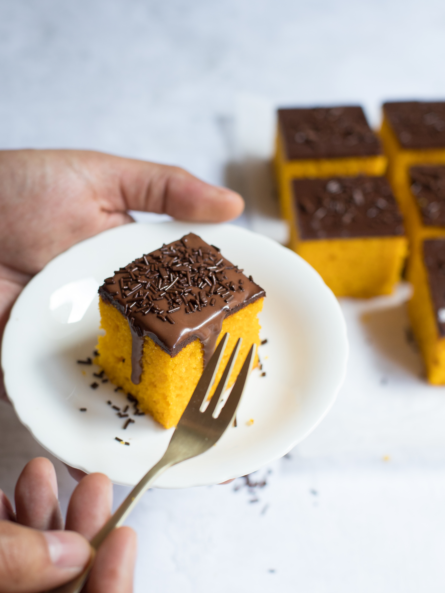

Brazilian-Style Carrot Cake with Chocolate

Piece of the cake
Description
Brazilian recipe for carrot cake. The chocolate sauce will harden and form a shell as it cools.
Ingredients
- 2 cups of white sugar
- 3 eggs
- 1/2 cup vegetable oil
- 3 carrots, quartered
- 2 cups all-purpose flour
- 1 tablespoon baking powder
Chocolate Sauce:
- 1/2 cup white sugar
- 1/2 cup cocoa powder
- 6 tablespoons milk
- 2 tablespoons unsalted butter
Steps
- Preheat oven to 350 degrees F (175 degrees C). Grease a 10-inch cake pan and dust with flour.
- Combine 2 cups sugar, eggs, vegetable oil, and carrots in a blender; blend until very smooth, about 5 minutes.
- Pour carrot mixture into a bowl; add flour and baking powder. Mix well to combine. Pour into the prepared cake pan.
- Bake in the preheated oven until a toothpick inserted into the center comes out clean, about 40 minutes. Cool in the pan for 5 minutes. Invert onto a wire rack to cool.
- Combine 1/2 cup sugar, cocoa powder, milk, and butter in a small saucepan over low heat. Cook, stirring constantly, until sauce begins to bubble and thicken, 3 to 4 minutes. Remove from heat and quickly spread over cake.